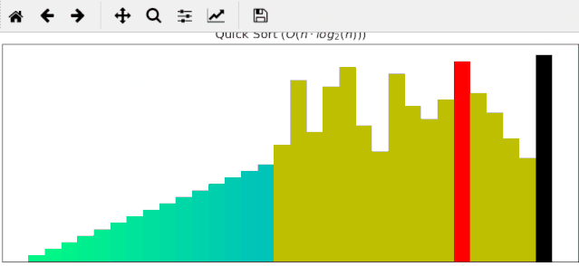
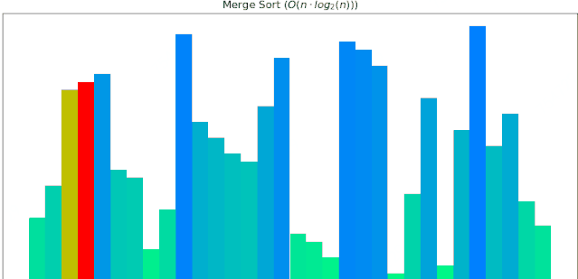
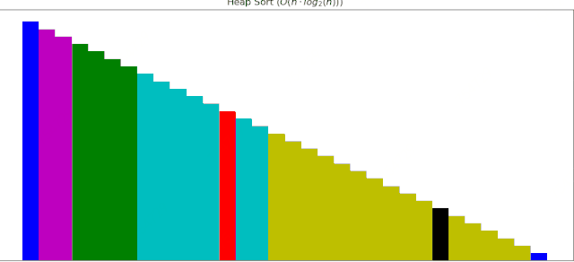

1 领略算法魅力¶
深刻研究排序算法是入门算法较为好的一种方法，现在还记得4年前手动实现常见8种排序算法，通过随机生成一些数据，逐个校验代码实现的排序过程是否与预期的一致，越做越有劲，越有劲越想去研究，公交车上，吃饭的路上。。。那些画面，现在依然记忆犹新。
能力有限，当时并没有生成排序过程的动画，所以这些年想着抽时间一定把排序的过程都制作成动画，然后分享出来，让更多的小伙伴看到，通过排序算法的动态演示动画，找到学习算法的真正乐趣，从而迈向一个新的认知领域。
当时我还是用C++写的，时过境迁，Python迅速崛起，得益于Python的简洁，接口易用，最近终于有人在github中开源了使用Python动画展示排序算法的项目，真是倍感幸运。
动画还是用matplotlib做出来的，这就更完美了，一边学完美的算法，一边还能提升Python熟练度，一边还能学到使用matplotlib制作动画。
快速排序动画展示

归并排序动画展示

堆排序动画展示

这些算法动画使用Matplotlib制作，接下来逐个补充。
2 排序算法的动画展示¶
学会第一部分如何制作动画后，可将此技术应用于排序算法调整过程的动态展示上。
首先生成测试使用的数据，待排序的数据个数至多20个，待排序序列为random_wait_sort，为每个值赋一个颜色值，这个由random_rgb负责：
data_count = 20 # here, max value of data_count is 20
random_wait_sort = [12, 34, 32, 24, 28, 39, 5,
22, 11, 25, 33, 32, 1, 25, 3, 8, 7, 1, 34, 7]
random_rgb = [(0.5, 0.811565104942967, 0.11211028937187217),
(0.5, 0.5201323831224014, 0.6660999602342474),
(0.5, 0.575976663060455, 0.17788242607567772),
(0.5, 0.6880174797416493, 0.43581701833249353),
(0.5, 0.4443131322001743, 0.6993600264279745),
(0.5, 0.5538835821863523, 0.889276053938713),
(0.5, 0.4851681185146841, 0.7977608586163772),
(0.5, 0.3886717808488436, 0.09319137949618972),
(0.5, 0.8952456581687489, 0.8282376936934484),
(0.5, 0.16360202854998007, 0.4538892160157194),
(0.5, 0.23233400128809478, 0.8544141586189615),
(0.5, 0.5224648797546528, 0.8194014475829123),
(0.5, 0.49396099968405016, 0.47441724394796825),
(0.5, 0.12078104526714728, 0.7715022079860492),
(0.5, 0.19428498518228154, 0.08174917157481443),
(0.5, 0.6058698403873457, 0.6085936584142663),
(0.5, 0.7801178568951216, 0.6414767240649862),
(0.5, 0.4768865661174162, 0.3889866229610085),
(0.5, 0.4301945092238082, 0.961688141676841),
(0.5, 0.40496648895289855, 0.24234095882836093)]
再封装一个简单的数据对象Data：
class Data:
def __init__(self, value, rgb):
self.value = value
self.color = rgb
# 造数据
@classmethod
def create(cls):
return [Data(val, rgb) for val, rgb in zip(random_wait_sort[:data_count],
random_rgb[:data_count])]